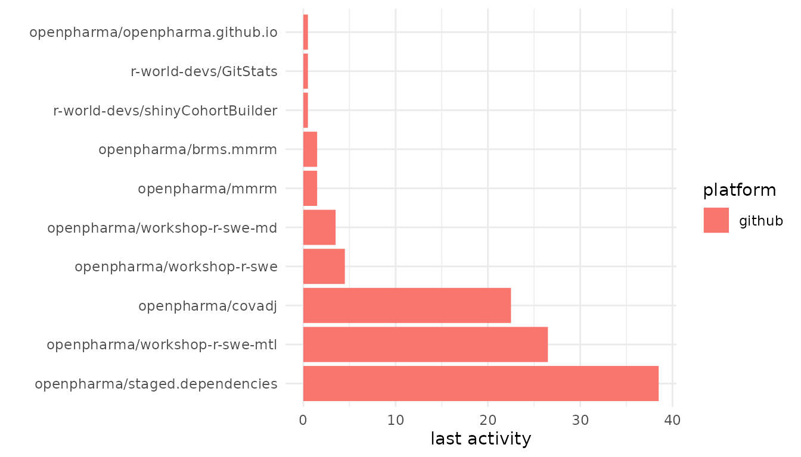
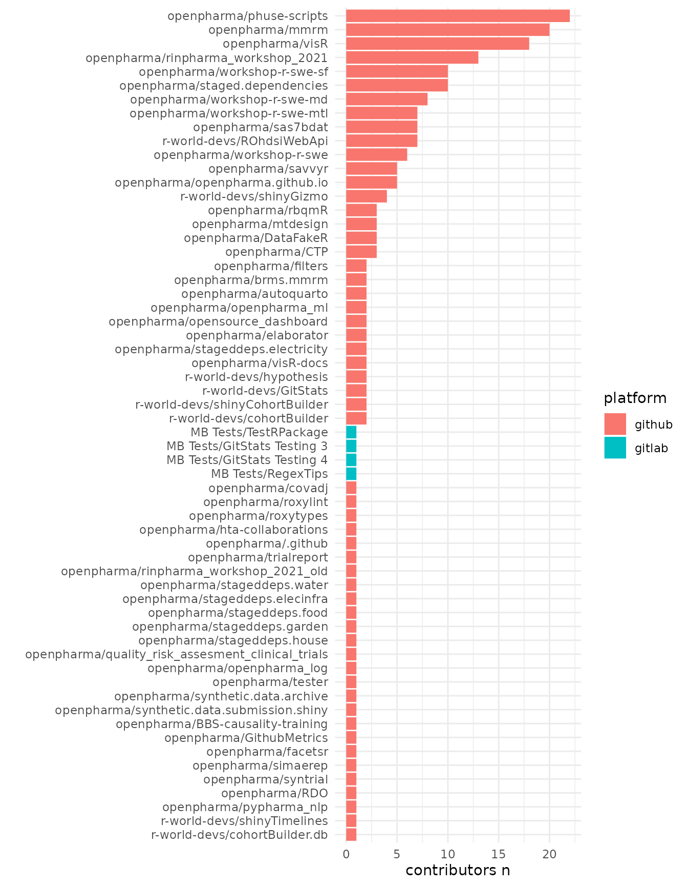
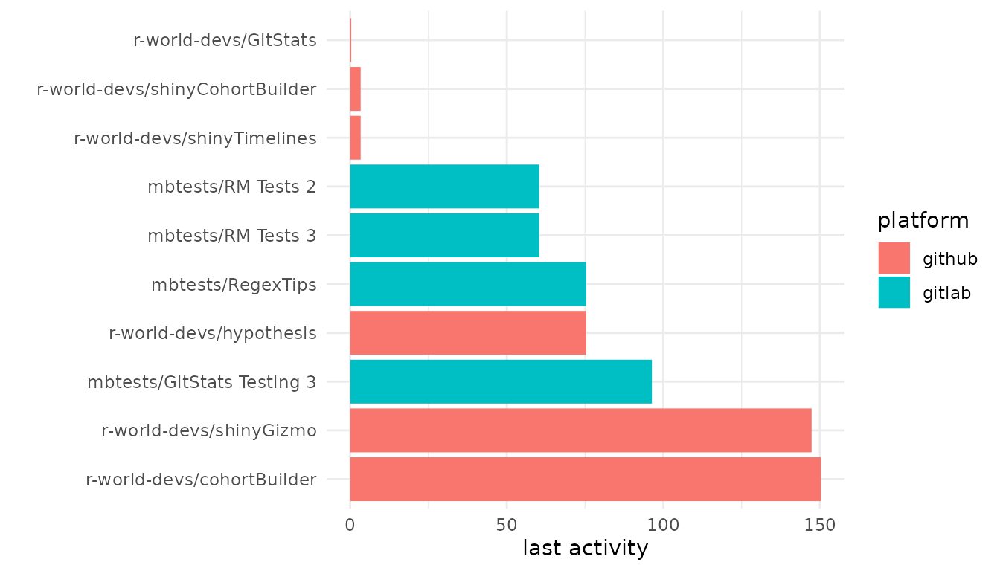

GitStats workflow
gitstats_workflow.RmdYou can start by creating your GitStats object, where
you will hold information on your multiple connections.
Example workflow makes use of public GitLab, but is rather more plausible, that you will use your internal git platforms.
library(GitStats)
git_stats <- create_gitstats() %>%
set_host(
api_url = "https://api.github.com",
orgs = c("r-world-devs", "openpharma"),
token = Sys.getenv("GITHUB_PAT")
) %>%
set_host(
api_url = "https://gitlab.com/api/v4",
orgs = c("mbtests"),
token = Sys.getenv("GITLAB_PAT_PUBLIC")
)
#> ✔ Set connection to GitHub.
#> ✔ Set connection to GitLab.If you have your token environment variables stored in
GITHUB_PAT or GITHUB_PAT_* and
GITLAB_PAT or GITLAB_PAT_* you do not need to
specify them in set_host() function, GitStats
will automatically find them.
git_stats <- create_gitstats() %>%
set_host(
api_url = "https://api.github.com",
orgs = c("r-world-devs", "openpharma")
) %>%
set_host(
api_url = "https://gitlab.com/api/v4",
orgs = c("mbtests")
)Repositories workflow
By default your search preferences are set to
organizations (org), which means that
GitStats will pull all repositories from the organizations
you specified in set_host().
pull_repos(git_stats)
#> ℹ [GitHub][Engine:GraphQL][org:r-world-devs] Pulling repositories...
#> ℹ [GitHub][Engine:GraphQL][org:openpharma] Pulling repositories...
#> ℹ [GitLab][Engine:GraphQL][org:mbtests] Pulling repositories...
#> Rows: 65
#> Columns: 12
#> $ id <chr> "R_kgDOHNMr2w", "R_kgDOHYNOFQ", "R_kgDOHYNrJw", "R_kg…
#> $ name <chr> "shinyGizmo", "cohortBuilder", "shinyCohortBuilder", …
#> $ stars <int> 18, 3, 5, 0, 1, 3, 0, 2, 7, 178, 4, 10, 1, 19, 0, 1, …
#> $ forks <int> 0, 2, 0, 0, 0, 0, 0, 0, 4, 31, 1, 1, 0, 4, 1, 1, 0, 0…
#> $ created_at <dttm> 2022-04-20 10:04:32, 2022-05-22 18:31:55, 2022-05-22…
#> $ last_activity_at <dttm> 2023-05-08, 2023-05-05, 2023-09-29, 2022-07-29, 2023…
#> $ languages <chr> "R, CSS, JavaScript", "R", "R, CSS, JavaScript, SCSS"…
#> $ issues_open <int> 6, 22, 32, 3, 71, 0, 0, 3, 6, 16, 0, 0, 0, 4, 0, 0, 0…
#> $ issues_closed <int> 12, 1, 4, 0, 131, 0, 0, 0, 1, 167, 0, 0, 0, 16, 0, 0,…
#> $ organization <chr> "r-world-devs", "r-world-devs", "r-world-devs", "r-wo…
#> $ repo_url <chr> "https://github.com/r-world-devs/shinyGizmo", "https:…
#> $ api_url <chr> "https://api.github.com/repos/r-world-devs/shinyGizmo…You can add to your repositories information on contributors.
pull_repos_contributors(git_stats)
#> ℹ [GitHub][Engine:REST][org:r-world-devs and openpharma] Pulling contributors...
#> ℹ [GitLab][Engine:REST][org:MB Tests] Pulling contributors...After you pulled the data you can retrieve the stats
from it.
repos_stats <- get_repos_stats(git_stats)
head(repos_stats)
#> repository platform created_at last_activity
#> 1 r-world-devs/shinyGizmo github 2022-04-20 10:04:32 144.6 days
#> 2 r-world-devs/cohortBuilder github 2022-05-22 18:31:55 147.6 days
#> 3 r-world-devs/shinyCohortBuilder github 2022-05-22 19:04:12 0.6 days
#> 4 r-world-devs/cohortBuilder.db github 2022-05-22 19:11:32 427.6 days
#> 5 r-world-devs/GitStats github 2023-01-09 14:02:20 0.6 days
#> 6 r-world-devs/shinyTimelines github 2023-02-21 16:41:59 0.6 days
#> stars forks languages issues_open issues_closed contributors_n
#> 1 18 0 R, CSS, JavaScript 6 12 4
#> 2 3 2 R 22 1 2
#> 3 5 0 R, CSS, JavaScript, SCSS 32 4 2
#> 4 0 0 R 3 0 1
#> 5 1 0 R 71 131 2
#> 6 3 0 R, CSS 0 0 1Or just retrieve the output.
repos <- get_repos(git_stats)Finally, you can plot the statistics. By default
last_activity is plotted for 10 repositories.
gitstats_plot(repos_stats)
But, you can change it to other column, also you can choose number of repositories.
gitstats_plot(
stats_table = repos_stats,
value_to_plot = "contributors_n",
value_decreasing = FALSE,
n = 60
)
If you work with interactive app, you can use a
plotly_mode.
gitstats_plot(repos_stats, plotly_mode = TRUE)Commits workflow
It is basically very similar to the repositories one, but you should
specify additionally at least date_from parameter.
pull_commits(
gitstats_obj = git_stats,
date_from = "2022-01-01",
date_until = "2023-08-31"
) %>%
get_commits_stats() %>%
gitstats_plot()
#> Rows: 2,532
#> Columns: 8
#> $ id <chr> "C_kwDOHNMr29oAKDczNWVjNmVhMzY3ZTZmOTg1NmViMGZlNjUwZDNj…
#> $ committed_date <dttm> 2023-05-08 09:43:31, 2023-04-28 12:30:40, 2023-03-01 1…
#> $ author <chr> "Krystian Igras", "Kamil Koziej", "Krystian Igras", "Kr…
#> $ additions <int> 18, 18, 296, 18, 10, 29, 8, 17, 1, 11, 267, 876, 1, 6, …
#> $ deletions <int> 0, 0, 153, 11, 7, 14, 4, 8, 1, 5, 146, 146, 1, 4, 3, 9,…
#> $ repository <chr> "shinyGizmo", "shinyGizmo", "shinyGizmo", "shinyGizmo",…
#> $ organization <chr> "r-world-devs", "r-world-devs", "r-world-devs", "r-worl…
#> $ api_url <chr> "https://api.github.com", "https://api.github.com", "ht…
You can pull stats by week or day.
get_commits_stats(
gitstats_obj = git_stats,
time_interval = "week"
) %>%
gitstats_plot()
You can also retrieve just the pulled output.
commits <- get_commits(git_stats)
head(commits)
#> id
#> 1: C_kwDOHNMr29oAKDczNWVjNmVhMzY3ZTZmOTg1NmViMGZlNjUwZDNjNTFjM2ExYWVmYjU
#> 2: C_kwDOHNMr29oAKDU3MDY0MmE1NmIyMDNmYTQ0YmZiZDYxZDU5OTEyM2ZhZTZlZDhkZDg
#> 3: C_kwDOHNMr29oAKGI3ZmRlYTNkNjY0NmM2MmRmMzA0N2Y0NDhkODQyY2ZkYjI2MjIyNWU
#> 4: C_kwDOHNMr29oAKDQ5MGQ3Yzc0MjVjYTYwMDc5YTJkMTA0MTQ2NWRlZGU2ZTI2YzA1YmI
#> 5: C_kwDOHNMr29oAKGJmYzhkZWU1MThjZDY4ODdjNjRiYWE4ODc5NTVhNjI5Y2RkMTg0NDQ
#> 6: C_kwDOHNMr29oAKGMxNjZmYzljMWNiZTYwN2M2MzEzMmU0OWVkMjBiODYwYjNlYzYxZGE
#> committed_date author additions deletions repository
#> 1: 2023-05-08 09:43:31 Krystian Igras 18 0 shinyGizmo
#> 2: 2023-04-28 12:30:40 Kamil Koziej 18 0 shinyGizmo
#> 3: 2023-03-01 15:05:10 Krystian Igras 296 153 shinyGizmo
#> 4: 2023-03-01 14:58:22 Krystian Igras 18 11 shinyGizmo
#> 5: 2023-02-28 16:46:59 Krystian Igras 10 7 shinyGizmo
#> 6: 2023-02-28 13:33:40 Krystian Igras 29 14 shinyGizmo
#> organization api_url
#> 1: r-world-devs https://api.github.com
#> 2: r-world-devs https://api.github.com
#> 3: r-world-devs https://api.github.com
#> 4: r-world-devs https://api.github.com
#> 5: r-world-devs https://api.github.com
#> 6: r-world-devs https://api.github.comSet
You can setup your search preferences, either to org,
team or phrase.
With settings you can also set your language and silence the output.
set_params(
gitstats_obj = git_stats,
print_out = FALSE
)
#> A <GitStats> object for 2 hosts:
#> Hosts: https://api.github.com, https://gitlab.com/api/v4
#> Organisations: [3] r-world-devs, openpharma, mbtests
#> Search preference: org
#> Team: <not defined>
#> Phrase: <not defined>
#> Language: All
#> Repositories output: Rows number: 65
#> Commits output: Since: 2022-01-02 19:01:33; Until: 2023-08-30 20:01:23; Rows number: 2532Team
If you wish to setup your search parameter to team, add
your team members first:
git_stats %>%
set_team_member("Kamil Wais", "kalimu") %>%
set_team_member("Krystian Igras", "krystian8207") %>%
set_team_member("Karolina Marcinkowska", "marcinkowskak") %>%
set_team_member("Kamil Koziej", "Cotau") %>%
set_team_member("Maciej Banaś", "maciekbanas")
#> ✔ Kamil Wais successfully added to team.
#> ✔ Krystian Igras successfully added to team.
#> ✔ Karolina Marcinkowska successfully added to team.
#> ✔ Kamil Koziej successfully added to team.
#> ✔ Maciej Banaś successfully added to team.If you have another logins on other git platform, you should pass them separately, e.g.
set_team_member("Maciej Banas", "maciekbanas", "banasm").
Then set the parameters accordingly.
set_params(
gitstats_obj = git_stats,
search_param = "team",
team_name = "RWD",
print_out = FALSE
)
#> ✔ Your search preferences set to team: RWD.
#> A <GitStats> object for 2 hosts:
#> Hosts: https://api.github.com, https://gitlab.com/api/v4
#> Organisations: [3] r-world-devs, openpharma, mbtests
#> Search preference: team
#> Team: RWD (5 members)
#> Phrase: <not defined>
#> Language: All
#> Repositories output: Rows number: 65
#> Commits output: Since: 2022-01-02 19:01:33; Until: 2023-08-30 20:01:23; Rows number: 2532Pull repositories or commits finally.
pull_repos(git_stats) %>%
get_repos_stats() %>%
gitstats_plot()
#> ℹ [GitHub][Engine:GraphQL][org:r-world-devs][team:RWD] Pulling repositories...
#> ℹ [GitHub][Engine:GraphQL][org:openpharma][team:RWD] Pulling repositories...
#> ℹ [GitHub][Engine:REST][org:r-world-devs and openpharma] Pulling contributors...
#> ℹ [GitLab][Engine:REST][org:mbtests][team:RWD] Pulling repositories...
#> ℹ [GitLab][Engine:REST][org:mbtests] Pulling contributors...
pull_commits(
gitstats_obj = git_stats,
date_from = "2022-01-01",
date_until = "2023-08-31"
) %>%
get_commits_stats() %>%
gitstats_plot()
Phrase
With GitStats you can look for the repos with a certain
phrase in code blobs (you can not do it for the commits!).
repos_stats <- set_params(
gitstats_obj = git_stats,
search_param = "phrase",
phrase = "shiny",
print_out = FALSE
) %>%
pull_repos() %>%
get_repos_stats()
#> ✔ Your search preferences set to phrase: shiny.
#> ℹ [GitHub][Engine:REST][phrase:shiny][org:r-world-devs] Searching repositories...
#> ℹ [GitHub][Engine:REST][phrase:shiny][org:openpharma] Searching repositories...
#> ℹ [GitLab][Engine:REST][phrase:shiny][org:mbtests] Searching repositories...
head(repos_stats)
#> repository platform created_at last_activity
#> 1: r-world-devs/shinyCohortBuilder github 2022-05-22 19:04:12 0.19 days
#> 2: r-world-devs/GitStats github 2023-01-09 14:02:20 0.05 days
#> 3: openpharma/elaborator github 2021-11-24 06:53:27 595.04 days
#> 4: openpharma/openpharma_ml github 2022-07-11 13:19:59 140.04 days
#> stars forks languages issues_open issues_closed contributors_n
#> 1: 5 0 R 30 0 NA
#> 2: 1 0 R 30 0 NA
#> 3: 2 0 R 0 0 NA
#> 4: 0 0 Python 0 0 NALanguage
You can define a programming language in your settings.
repos_stats <- set_params(
gitstats_obj = git_stats,
search_param = "org",
language = "JavaScript",
print_out = FALSE
) %>%
pull_repos() %>%
get_repos_stats()
#> ✔ Your programming language is set to JavaScript.
#> ℹ [GitHub][Engine:GraphQL][org:r-world-devs] Pulling repositories...
#> ℹ [GitHub][Engine:GraphQL][org:openpharma] Pulling repositories...
#> ℹ Filtering by language.
#> ℹ [GitLab][Engine:GraphQL][org:mbtests] Pulling repositories...
#> ℹ Filtering by language.
head(repos_stats)
#> repository platform created_at last_activity
#> 1 r-world-devs/shinyGizmo github 2022-04-20 10:04:32 144.6 days
#> 2 r-world-devs/shinyCohortBuilder github 2022-05-22 19:04:12 0.6 days
#> 3 r-world-devs/hypothesis github 2023-04-13 13:52:24 72.6 days
#> 4 openpharma/facetsr github 2020-11-26 13:56:52 1033.6 days
#> 5 openpharma/phuse-scripts github 2022-06-09 14:27:07 463.6 days
#> 6 openpharma/autoquarto github 2023-02-02 14:59:57 99.6 days
#> stars forks languages issues_open issues_closed
#> 1 18 0 R, CSS, JavaScript 6 12
#> 2 5 0 R, CSS, JavaScript, SCSS 32 4
#> 3 2 0 R, JavaScript 3 0
#> 4 4 0 R, JavaScript, CSS 1 0
#> 5 0 0 JavaScript, Perl, R, Julia, XSLT 0 0
#> 6 3 0 R, HTML, JavaScript 2 2
#> contributors_n
#> 1 NA
#> 2 NA
#> 3 NA
#> 4 NA
#> 5 NA
#> 6 NAYou can always get back to All languages.
reset_language(git_stats)
#> ℹ Setting language parameter to 'All'.
#> A <GitStats> object for 2 hosts:
#> Hosts: https://api.github.com, https://gitlab.com/api/v4
#> Organisations: [3] r-world-devs, openpharma, mbtests
#> Search preference: org
#> Team: RWD (5 members)
#> Phrase: shiny
#> Language: All
#> Repositories output: Rows number: 6
#> Commits output: Since: 2022-01-20 14:57:56; Until: 2023-08-28 08:12:15; Rows number: 727Users
You can retrieve data about users with GitStats.
pull_users(
gitstats_obj = git_stats,
users = c("maciekbanas", "kalimu", "Cotau", "marcinkowskak", "krystian8207")
) %>%
get_users()
#> # A tibble: 8 × 12
#> id name login email location starred_repos commits issues pull_requests
#> <chr> <chr> <chr> <chr> <chr> <int> <int> <int> <int>
#> 1 MDQ6VXN… "Mac… maci… "" "" 15 435 209 103
#> 2 MDQ6VXN… "Kam… kali… "kam… "Rzeszó… 80 0 0 1
#> 3 MDQ6VXN… "" Cotau "" "" 1 1 2 6
#> 4 MDQ6VXN… "Kar… marc… "" "Warsaw… 0 0 1 2
#> 5 MDQ6VXN… "Kry… krys… "kry… "Warsaw" 26 256 106 44
#> 6 gid://g… "Mac… maci… "" "" 0 NA NA 1
#> 7 gid://g… "Kam… Cotau "" "" 0 NA NA 0
#> 8 gid://g… "Kar… marc… "" "" 0 NA NA 0
#> # … with 3 more variables: reviews <int>, avatar_url <chr>, web_url <chr>Reset your settings
If you wish to get back to default settings, run:
reset(git_stats)
#> ℹ Reset settings to default.
#> A <GitStats> object for 2 hosts:
#> Hosts: https://api.github.com, https://gitlab.com/api/v4
#> Organisations: [3] r-world-devs, openpharma, mbtests
#> Search preference: org
#> Team: <not defined>
#> Phrase: <not defined>
#> Language: All
#> Repositories output: Rows number: 6
#> Commits output: Since: 2022-01-20 14:57:56; Until: 2023-08-28 08:12:15; Rows number: 727